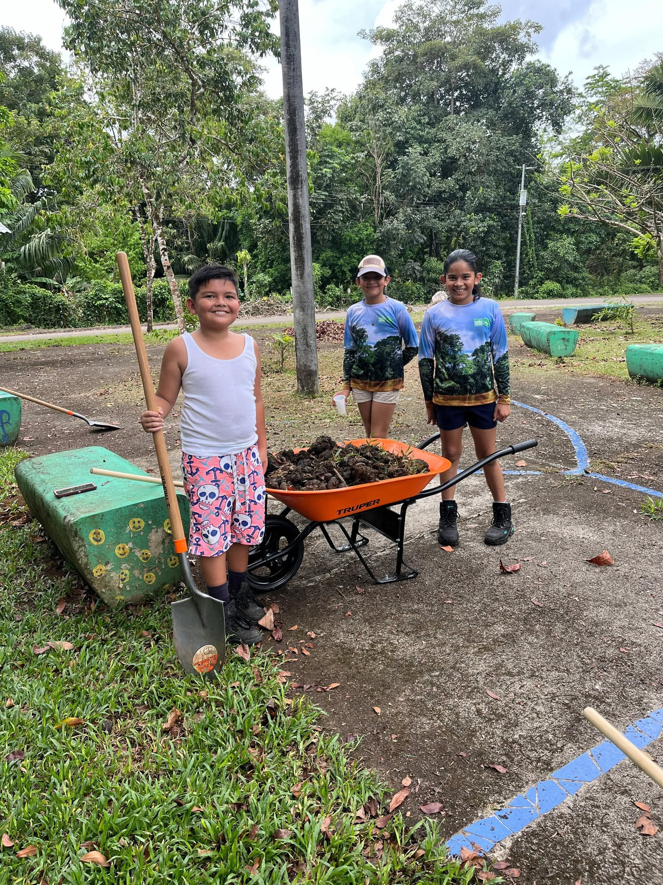
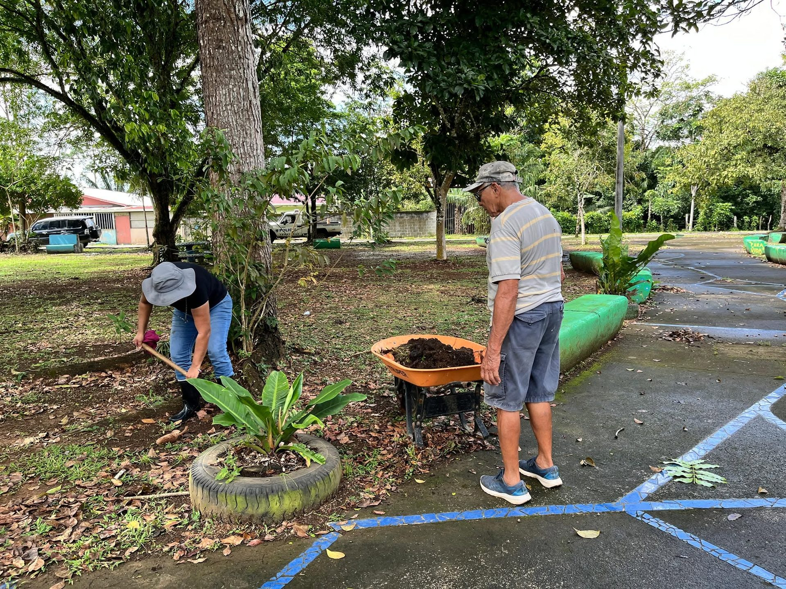
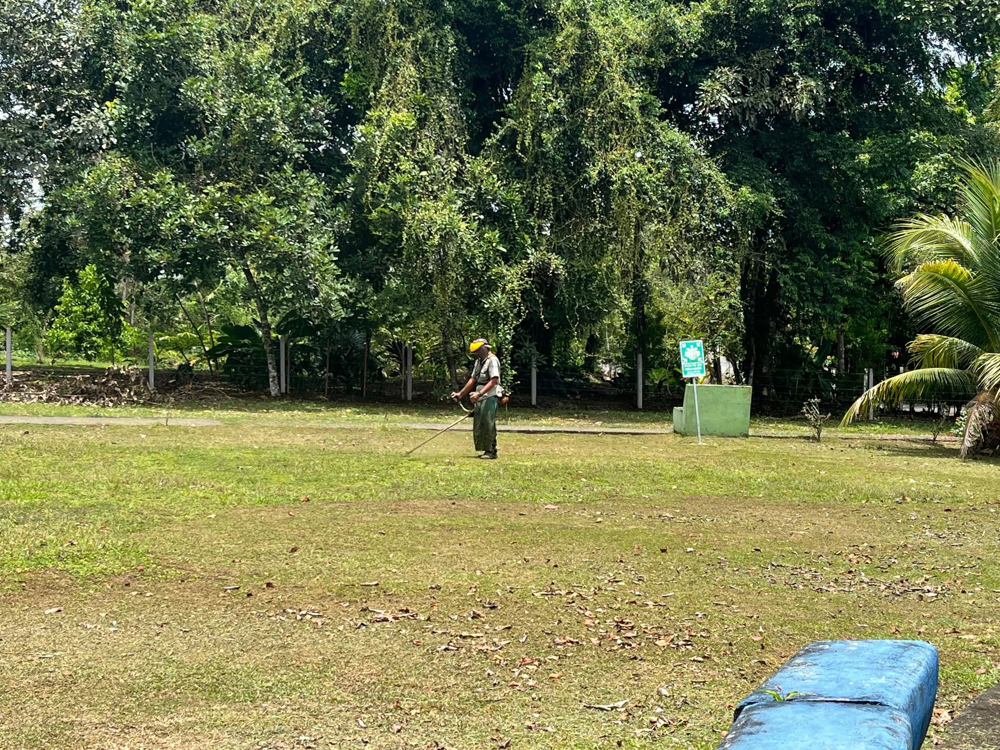
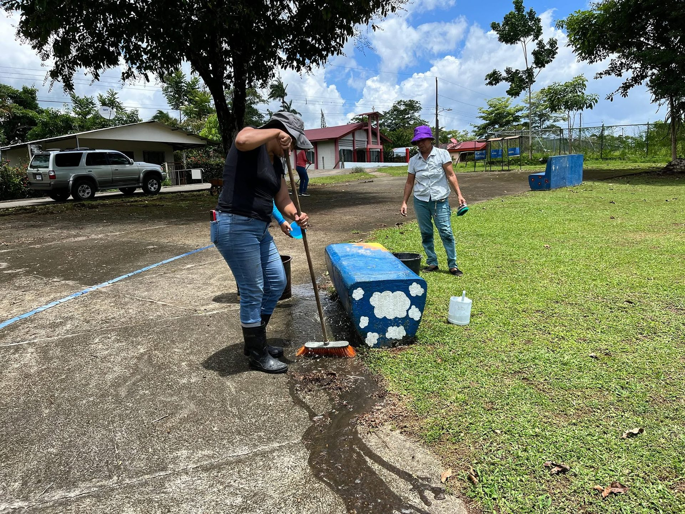

5 Estrellas Blancas
Se obtienen por alcanzar una nota superior a 90 puntos en la evaluación general del programa, demostrando un alto nivel de compromiso ambiental.
Programa AyA · Costa Rica
Un reconocimiento que impulsa la organización comunitaria hacia la sostenibilidad, la conservación del agua y el cuido del entorno natural que nos rodea.
Caño Negro, Los Chiles, Alajuela
Bandera Azul Ecológica es un programa del AyA que busca organizar a la sociedad para mejorar las condiciones ambientales e higiénicas, adaptado a la realidad local.
Nació enfocado en playas y hoy abarca comunidades, centros educativos, espacios naturales protegidos, microcuencas, eventos, hogares sostenibles y construcción sostenible. Cada categoría evalúa aspectos clave como la calidad del agua, manejo de residuos, educación ambiental y eficiencia energética.
Lo que hace especial a este programa es su compromiso anual constante: no es solo una certificación, es un proceso continuo de mejora, aprendizaje y acción colectiva que genera un cambio real en la cultura ambiental de quienes participan.
Comunidades, playas, espacios naturales, hogares sostenibles y más
La certificación se renueva cada año con nuevas acciones y evaluaciones
Eje central junto al manejo de residuos y la educación ambiental
Involucra a toda la comunidad en un proceso continuo de mejora
En el 2021, con unión y esfuerzo junto a SINAC, la comunidad de Caño Negro se incorporó al programa generando diversas acciones y controles en la localidad. En el 2022 se logró obtener la primera Bandera Azul Ecológica.
Por falta de integración de más manos voluntarias no se continuó la participación formal, manteniéndose congelada la tramitación. Sin embargo, el trabajo comunitario no se detuvo: recolección de residuos, charlas ambientales e integración de ideas siguen activos entre los pobladores.
El programa generó un cambio significativo en la población al crear conciencia sobre el manejo de residuos sólidos y el uso responsable de los recursos. Esperamos pronto retomar la participación formal y seguir sumando hogares al programa.




El Refugio Nacional de Vida Silvestre Mixto Caño Negro obtuvo la Bandera Azul Ecológica en la categoría Espacios Naturales Protegidos con la distinción más alta posible.
Espacios Naturales Protegidos
Cada estrella adicional representa compromisos específicos más allá del puntaje base, reconociendo acciones concretas en distintas áreas de sostenibilidad.
Se obtienen por alcanzar una nota superior a 90 puntos en la evaluación general del programa, demostrando un alto nivel de compromiso ambiental.
Se otorga por contar con un programa Bandera Azul Ecológica Hogar Sostenible activo dentro de la comunidad.
Reconoce las acciones concretas realizadas en la protección de cuerpos de agua dentro del área.
Reconoce las acciones realizadas en favor del bienestar animal dentro del refugio y su zona de influencia.
Se obtiene por la participación activa en el programa Ecoins, que incentiva el reciclaje y la economía circular comunitaria.
La Bandera Azul Ecológica genera beneficios concretos para las comunidades, el ambiente y el desarrollo sostenible del territorio.
Garantiza la calidad sanitaria del agua y los espacios públicos, evitando riesgos para la salud de la comunidad y los visitantes.
Fomenta la protección de los recursos naturales y la acción climática mediante el trabajo colectivo y organizado.
Posiciona a Caño Negro como un destino seguro y sostenible, atrayendo visitantes conscientes y responsables con el entorno.
Impulsa un cambio real de hábitos en las comunidades y centros educativos hacia estilos de vida más ecológicos y conscientes.
Ofrece un sello de prestigio nacional e internacional que visibiliza el esfuerzo de toda una comunidad comprometida con el medio ambiente.
Este reconocimiento es el resultado del esfuerzo conjunto de instituciones, organizaciones y personas de la comunidad que creyeron en el programa.
Es un programa del AyA que certifica comunidades, espacios naturales y centros educativos comprometidos con la sostenibilidad ambiental.
El Refugio obtuvo todas las estrellas disponibles: 5 blancas por nota superior a 90 puntos, más las estrellas verde, dorada, naranja y gris.
Podés comunicarte con la ADI Caño Negro para obtener información sobre cómo incorporar tu hogar al programa Bandera Azul Ecológica.
Se ubica en Los Chiles, Alajuela, Costa Rica, cerca de la frontera con Nicaragua.
Podés acceder por la Ruta 138 desde Upala o Los Chiles. Usá el botón de ubicación para ver la ruta.
Cambiando idioma...